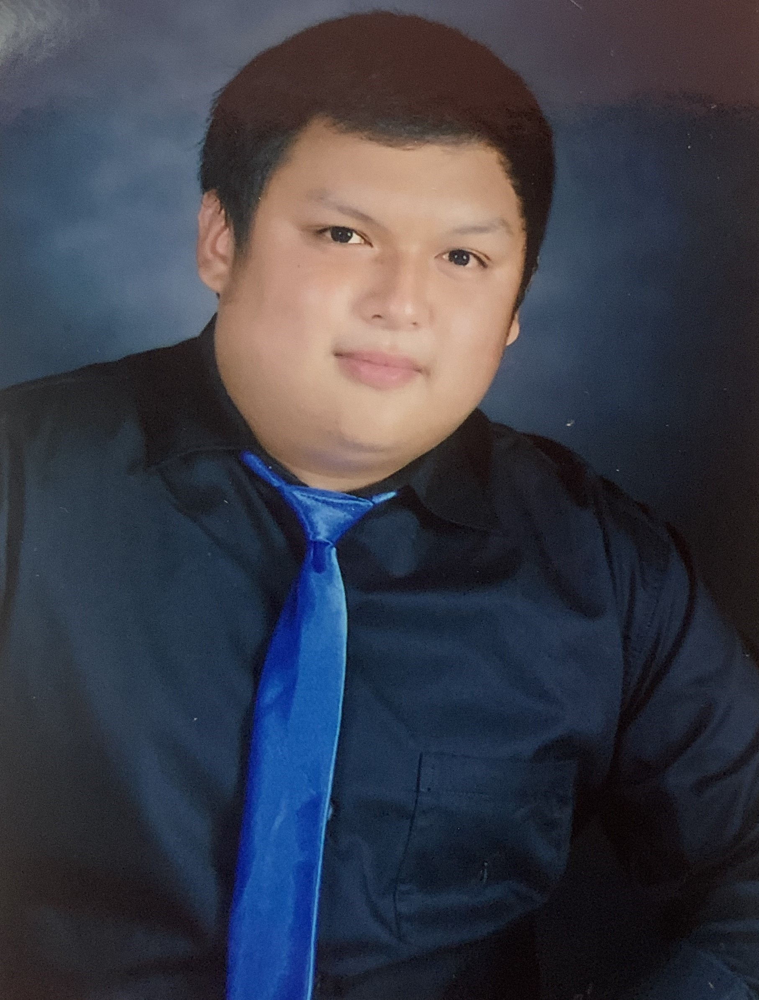

Alexander Lavarias
Information Technology Student
About Me
I'm a second-year student of the Bachelor of Science in Information Technology, majoring in Network and Security.
I am a computer enthusiast who loves and enjoy computer equipments and peripherals.
I'm also a computer technician that's why I love building or assembling computers components.
Experience
- MACULAV Tech - Computer Technician
- Tranco's Aqua - Aquarium Assembler
- Part-time Job at Professional Regulation Commission - Supply Officer
Education
- University of the Cordilleras - Bachelor of Science in Information Technology - Network Security (2022-2025)
- Baguio College of Technology (2020 - 2022)
Interests
Routing and Switching
Website Designing
Computer Tech Review
Playing Computer Games
Cooking Filipino Food